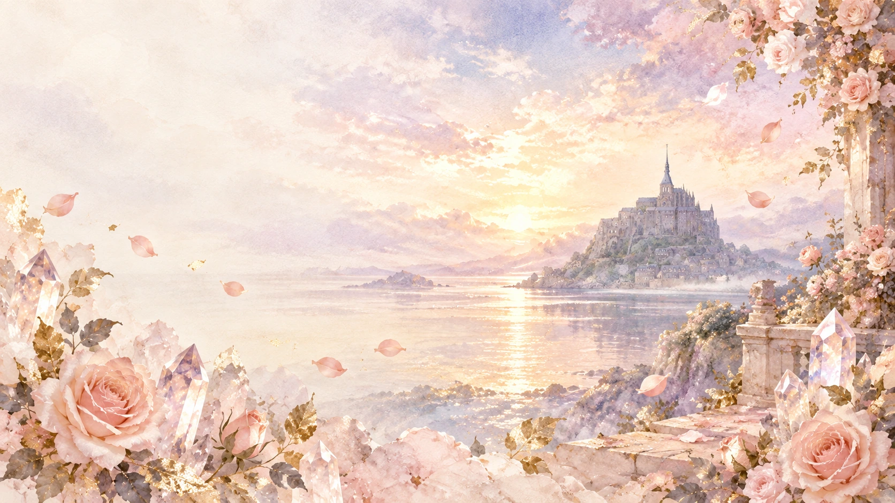
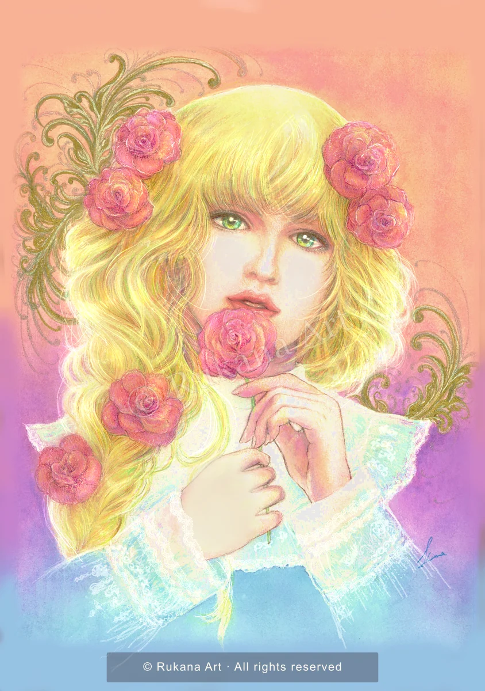
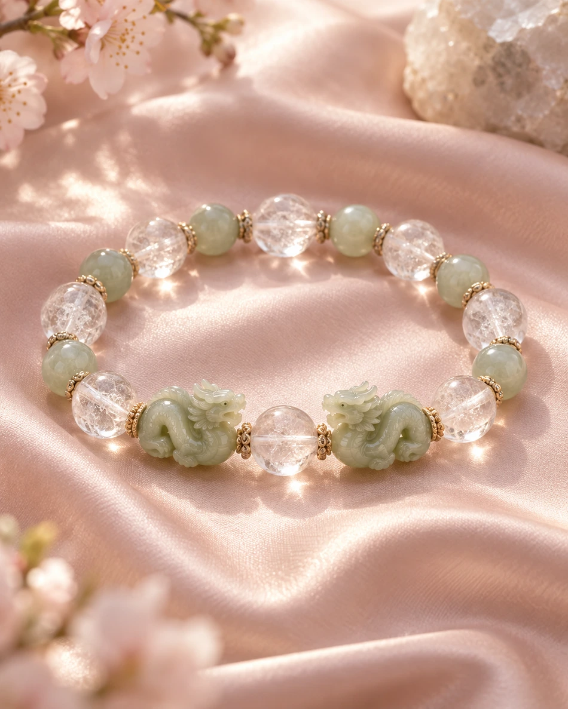
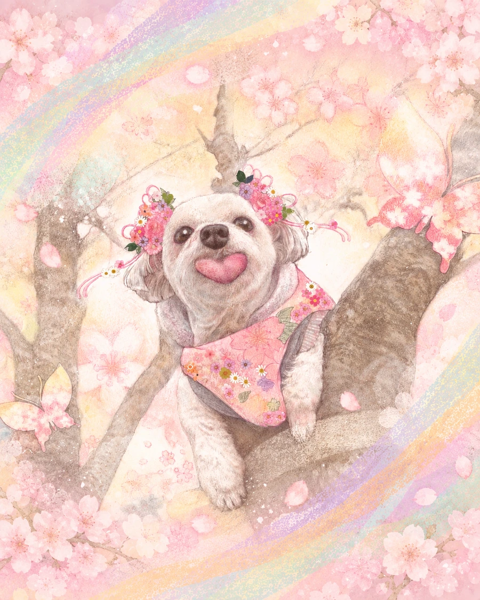
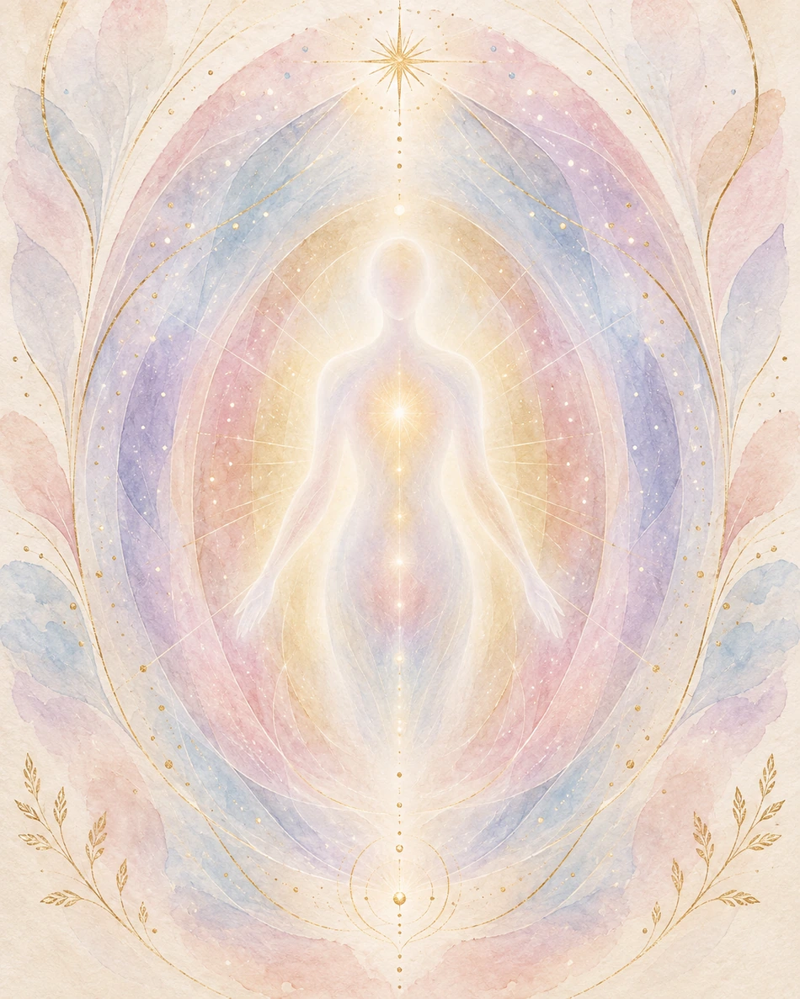
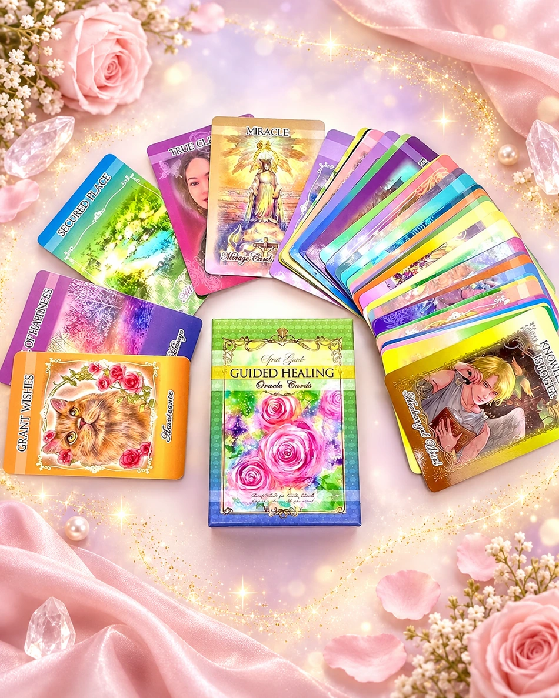
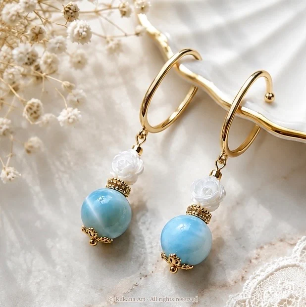
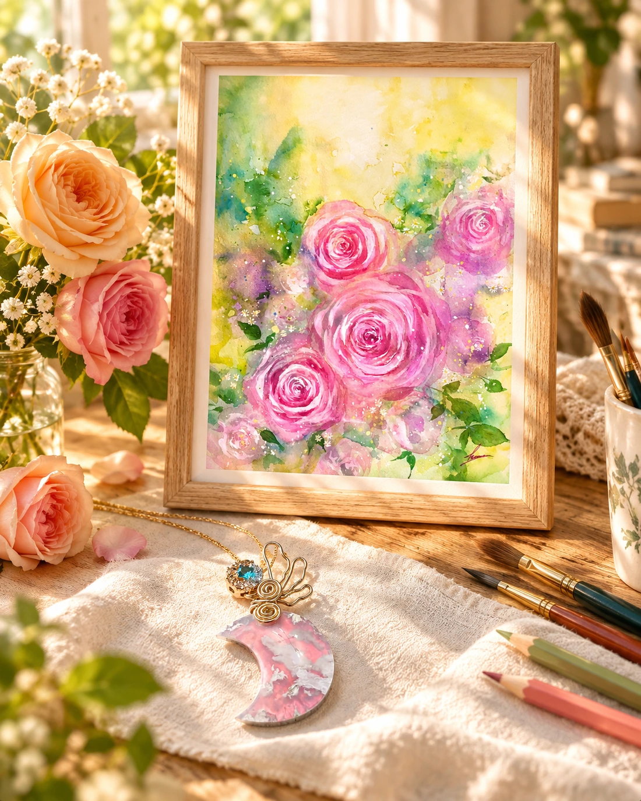

ART THAT TOUCHES YOUR SOUL
魂を描く、
光をまとう。
心がふっとほどける、一枚の絵。
自分らしさを思い出す、ひと粒の石。
あなたの物語に、やさしい光を。

THE WAY I CREATE
好きと感じる、その瞬間から。
あなたとアートの物語が始まる。
描くこと、身に纏うこと、そして感じること。
暮らしの中でふと目に留まる美しさが、
自分の心に還る、小さなきっかけになりますように。
FOUR WAYS TO FIND YOUR LIGHT
光とつながる、4つの扉。
今のあなたに響くかたちから。
ひとつひとつ、心を込めて。

01NATURAL STONE JEWELRY
天然石アクセサリー
好きな色を、お守りに。
詳しく見る
02PET PORTRAIT
ペット肖像画
大切な家族の物語を、絵に。
詳しく見る
03AURA SESSION
オーラセッション
心の声に、耳を澄ます時間。
詳しく見る
04ORACLE CARDS
オラクルカード
絵から届く、今日のメッセージ。
詳しく見る
JEWELRY COLLECTION
身にまとうアート、10の物語。
天然石アクセサリーの制作実績をご覧いただけます。
ART GALLERY
光のかけらたち。
景色、祈り、大切な存在。心に残るものを、色に託して。

ABOUT THE ARTIST
Rukana Art
魂を描く 波動アーティスト
「描くアートと身に纏うアート」をコンセプトに、肖像画や風景のアート、天然石アクセサリーを制作しています。
絵を眺めるひとときも、石を身に着ける一日も。あなたが自分の内側の輝きに触れる、きっかけになれたら。
プロフィールと活動を見る